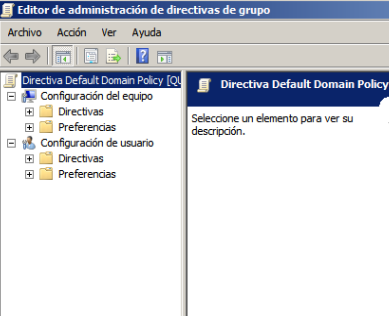
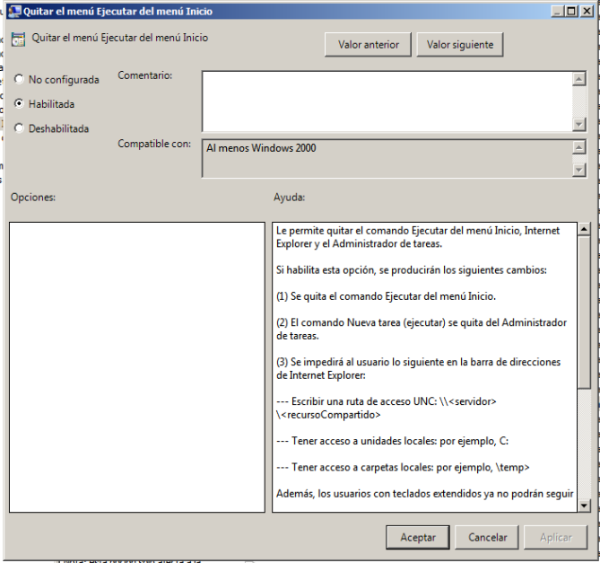
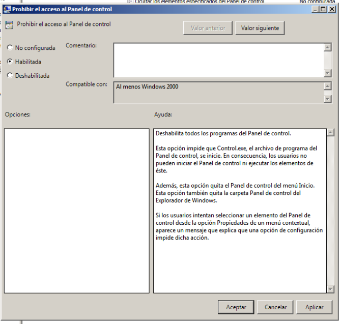
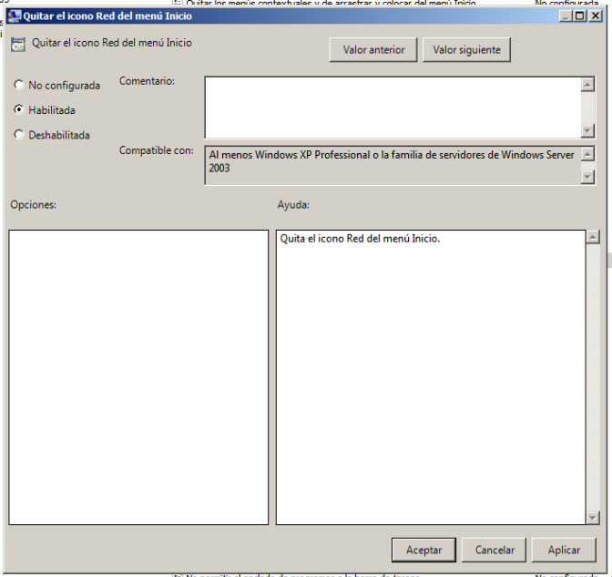
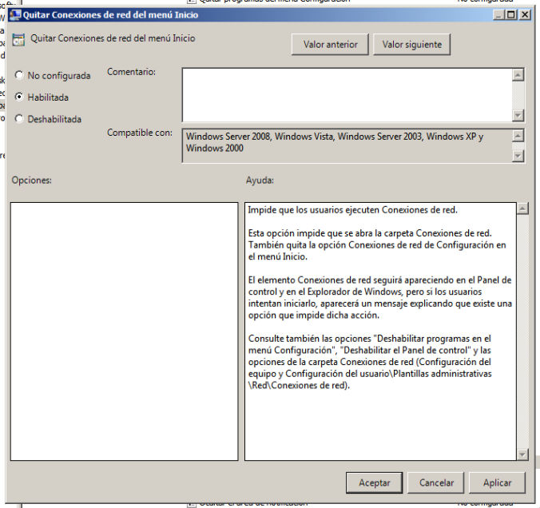
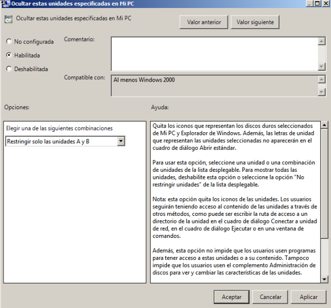
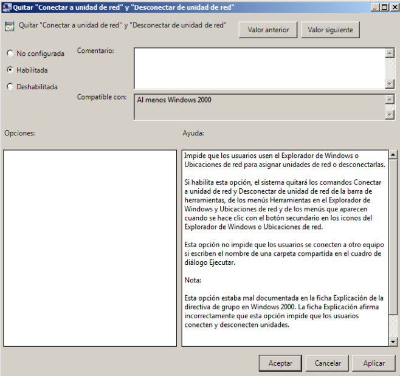

- Módulo: Sistemas Operativos
- Título del trabajo PDC: Politicas o directivas de grupo
- Componentes del grupo: Yolanda Maria Gonzalez Montelongo
- Curso Académico: 2013/2014
- Fecha de entrega: 19 de Junio de 2014
En estas practica de Politicas y Directivas de grupo, estableceremos unas directivas para la
OU jedi y otras diferentes para la OU sith
Empezaremos editando las configuraciones de las directivas de grupos.Por un lado, hay que buscar
la Administracion de directivas de grupo, y seguidamente, en el arbol de consola, buscaremos las directivas de grupo que
querremos modificar

En el editor de objetos de Directiva de grupo buscamos la Directiva de grupo a modificar. Mas adelante, en cuadro
de Propiedades, cambiamos la configuracion y aceptamos
1.-Quitar el menu Ejecutar del menu Inicio
- Vamos a la Configuracion de usuario, seguido a Plantillas Administrativas y entramos a Menu Inicio y barra de tareas
- Configuramos 'Quitar el menu Ejecutar del menu Inicio'
- Al finalizar, establecemos dicha opcion como habilitada

2.-Prohibir el acceso al Panel de Control
- Vamos a la Configuracion de usuario, seguido a Plantillas Administrativas y entramos a Panel de control
- Configuramos la Directiva de grupo 'Prohibir el acceso al Panel de control'
- Al finalizar, establecemos dicha opcion como habilitada

3-4.-Ocultar/Quitar el icono Mis sitios de red del escritorio
- Vamos a la Configuracion de usuario, seguido a Plantillas Administrativas y entramos a Escritorio
- Configuramos la Directiva de grupo 'Ocultar/Quitar el icono Mis sitios de red del escritorio'
- Al finalizar, establecemos dicha opcion como habilitada

5.-Quitar Conexiones de red del menu Inicio
- Vamos a la Configuracion de usuario, seguido a Plantillas Administrativas y entramos a Escritorio
- Configuramos la Directiva de grupo 'Quitar Conexiones de red del menu Inicio'
- Al finalizar, establecemos dicha opcion como habilitada

6.-Ocultar unidades especificas en Mi PC
- Vamos a la Configuracion de usuario, seguido a Plantillas Administrativas y entramos en Componentes de Windows
para buscar Explorador de Windows
- Configuramos la Directiva de grupo 'Ocultar estas unidades especificas en Mi PC' o la de 'Impedir el acceso a las unidades desde Mi PC'
- Al finalizar, establecemos dicha opcion como habilitada y elegimos la combinacion mas adecuada como por ejemplo, bloquear las unidades A y B

7.-Habilitar Quitar Conectar a unidad de red y Desconectar de unidad de red
- Vamos a la Configuracion de usuario, seguido a Plantillas Administrativas y entramos en Componentes de Windows
- Configuramos la Directiva de grupo 'Quitar Conectar a unidad de red' y 'Desconectar de unidad de red'
- Al finalizar, establecemos dicha opcion como habilitada
